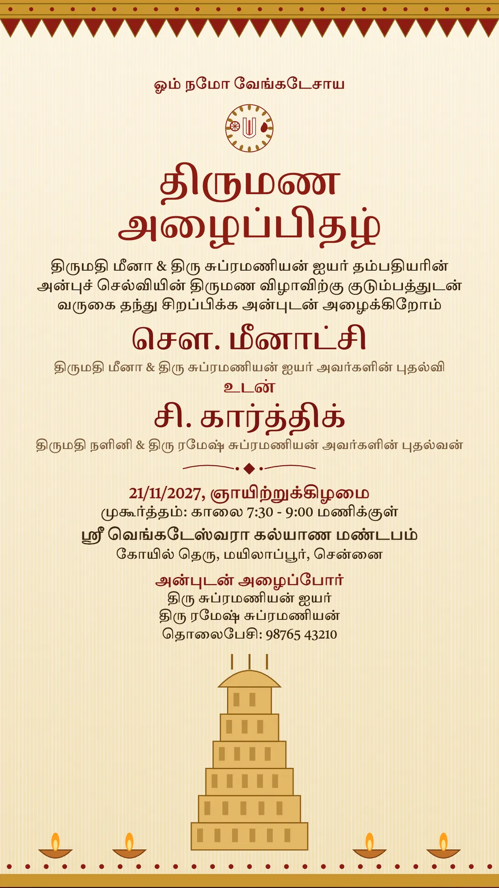
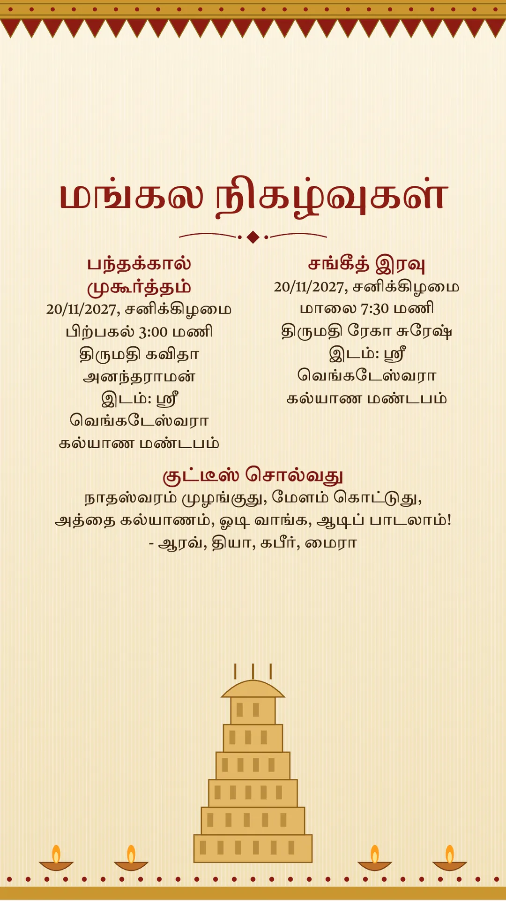
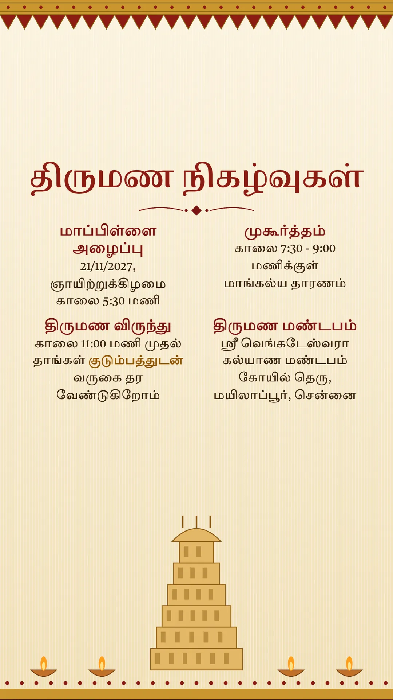
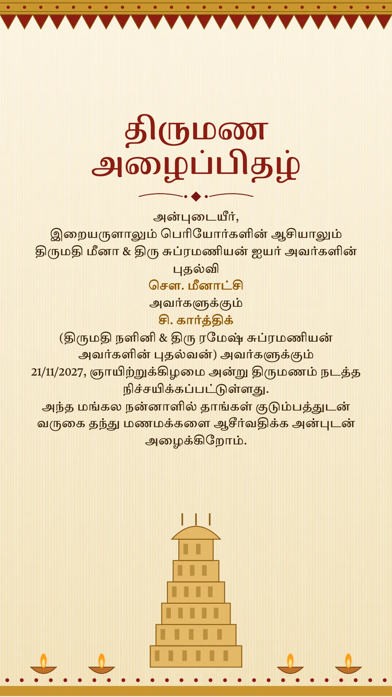
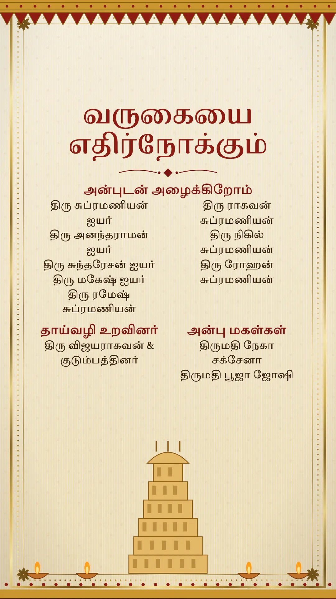
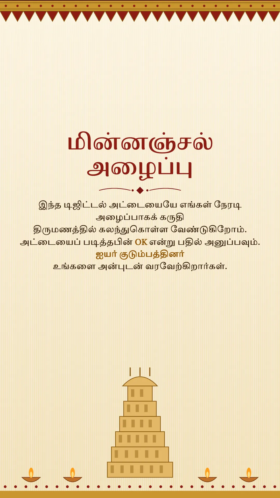

Designs › Wedding (Vivah) › Kanchipuram Temple Silk
Kanchipuram Temple Silk: Tamil wedding invitation

- Ceremony: Wedding (Vivah)
- Language: Tamil
- God or sacred symbol: Tirupati Balaji
- Format: WhatsApp image (1080 x 1920 px) and 5 x 7 inch print PDF
- Pages: 6 (cover, functions, wedding-day programme, letter, family names, closing message)
About this design
The background is pale cream with fine vertical lines, like the weave of raw silk, warming to beige at the bottom. Across the top runs a gold band with maroon temple teeth pointing down, the triangle border found on Kanchipuram saris, with a row of tiny maroon dots. At the bottom stands a tiered gold gopuram with kalasams on top, two lit oil lamps on either side, a row of maroon dots and a gold band along the edge.
The cover opens with ஓம் நமோ வேங்கடேசாய and the namam emblem of Venkateswara. திருமண அழைப்பிதழ் is set large in maroon over two lines, the names are in maroon with சௌ. before the bride's name and சி. before the groom's, and the parents' names are in small brown type. The time line gives the muhurtham as a window, காலை 7:30 - 9:00 மணிக்குள், and the venue is a kalyana mandapam in Mylapore.
The inner pages list the panthakal muhurtham and a sangeet evening the day before, then the wedding morning: mappillai azhaippu at 5:30, the muhurtham with mangalya dharanam, and the wedding feast from 11:00. The family page names the relatives who invite you, the maternal side and the daughters of the house, as a printed Tamil card does.
It suits Iyer and other Tamil Hindu families with a morning muhurtham at a kalyana mandapam. The cream and maroon look is quieter than a red and gold card. For the engagement and the turmeric bath before the wedding, Nischayathartham Banana Leaf and Mangala Snanam Turmeric Bath are also in Tamil with the same Venkateswara invocation. Telugu families who want an English card with this invocation can use Pelli Patrika Turmeric Mandapam.
All 6 pages
The cover is shown above. These are the other pages exactly as the card opens in the editor, with the sample family names.





Sample wording on this card
The cover opens in the editor with this text. Change any line, or switch the card to another language.
ஓம் நமோ வேங்கடேசாய
திருமண அழைப்பிதழ்
திருமதி மீனா & திரு சுப்ரமணியன் ஐயர் தம்பதியரின் அன்புச் செல்வியின் திருமண விழாவிற்கு குடும்பத்துடன் வருகை தந்து சிறப்பிக்க அன்புடன் அழைக்கிறோம்
சௌ. மீனாட்சி
திருமதி மீனா & திரு சுப்ரமணியன் ஐயர் அவர்களின் புதல்வி
உடன்
சி. கார்த்திக்
திருமதி நளினி & திரு ரமேஷ் சுப்ரமணியன் அவர்களின் புதல்வன்
22/11/2026, ஞாயிற்றுக்கிழமை
முகூர்த்தம்: காலை 7:30 - 9:00 மணிக்குள்
ஸ்ரீ வெங்கடேஸ்வரா கல்யாண மண்டபம்
கோயில் தெரு, மயிலாப்பூர், சென்னை
அன்புடன் அழைப்போர்
திரு சுப்ரமணியன் ஐயர்
திரு ரமேஷ் சுப்ரமணியன்
தொலைபேசி: 98765 43210
The other five pages are மங்கல நிகழ்வுகள் (the functions before the wedding), திருமண நிகழ்வுகள் (the wedding-day programme), திருமண அழைப்பிதழ் (the letter), வருகையை எதிர்நோக்கும் (the family names) and மின்னஞ்சல் அழைப்பு (the closing message).